Meet Our Active Teams!
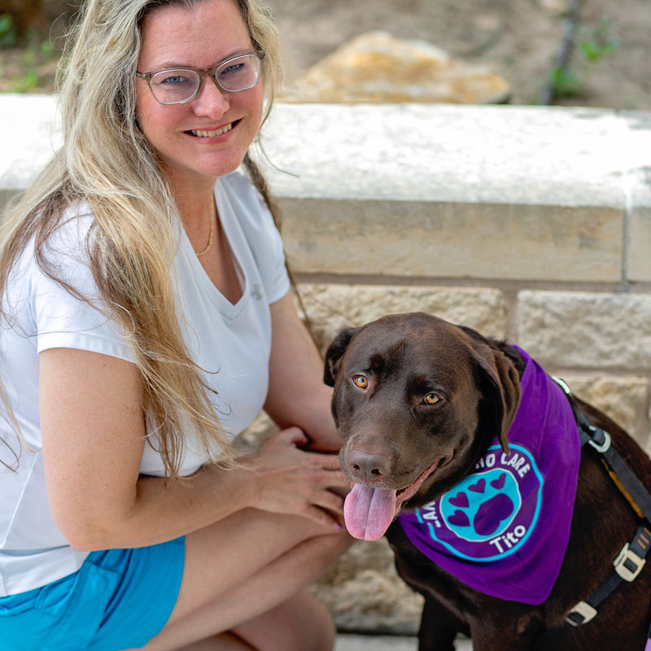
Jaime’s passion for therapy dog work began during her time as a nurse at Brackenridge Hospital, where she witnessed the powerful impact of Jack, the trauma dog, in bringing comfort and calm during difficult moments. Inspired by that experience, she set out to bring the same support to schools and the community. Tito joined the Margiotta family at just five weeks old and quickly showed his calm, intuitive, and people-focused nature. Today, he provides comfort and connection to students, staff, and community members alike. Together, Jaime and Tito embody the mission of Canines Who Care bringing comfort, building trust, and supporting others when it matters most.
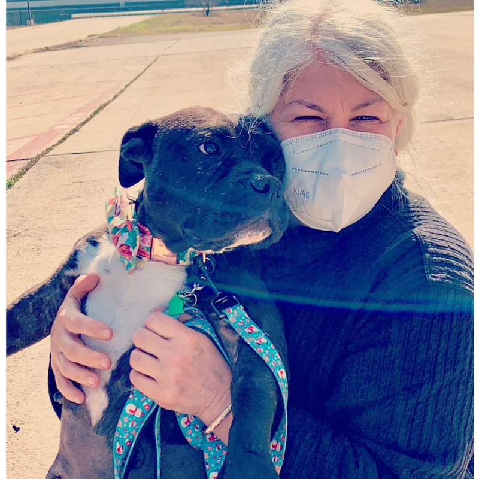
Ruthie is a Staffordshire Terrier Mix, who was adopted from Footbridge Foundation in San Antonio, Texas. Ruthie is pure joy and love! She loves peanut butter and snuggling on the sofa. She loves going to the schools and letting the kids love on her. Mandy works hard as an aesthetician to give the five rescue animals in her house the best life they can have!
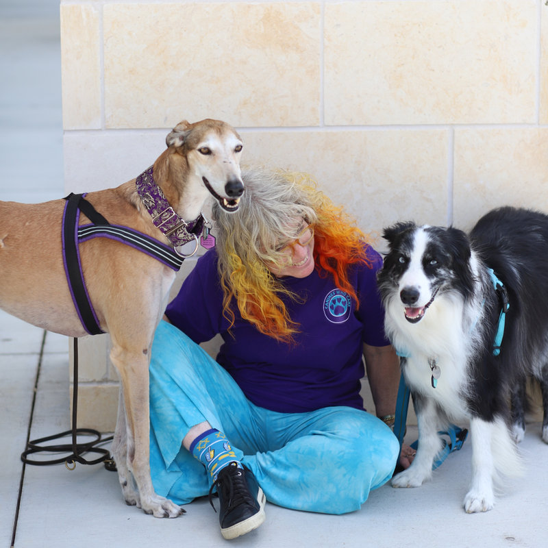
Jyl has done lots of stuff - radio broadcaster, Celtic musician, English teacher, and working in the Texas heat training hundreds of dogs for other people, Finally she and her collie Vito joined Canines Who Care in 2016 and she ended up being the trainer (and cheerleader) for the group. Her current PERFECT dogs are Dash - whose blue eyes will steal your soul, and Leo - who fixes broken hearts. She dedicates this work to her former partner, Vito, who adored affection and loved being part of a team that brings love and joy to others. Credentials: CPDT-KA, Level 3 Tellington TTouch Companion Animal Practitioner, AKC CGC Evaluator
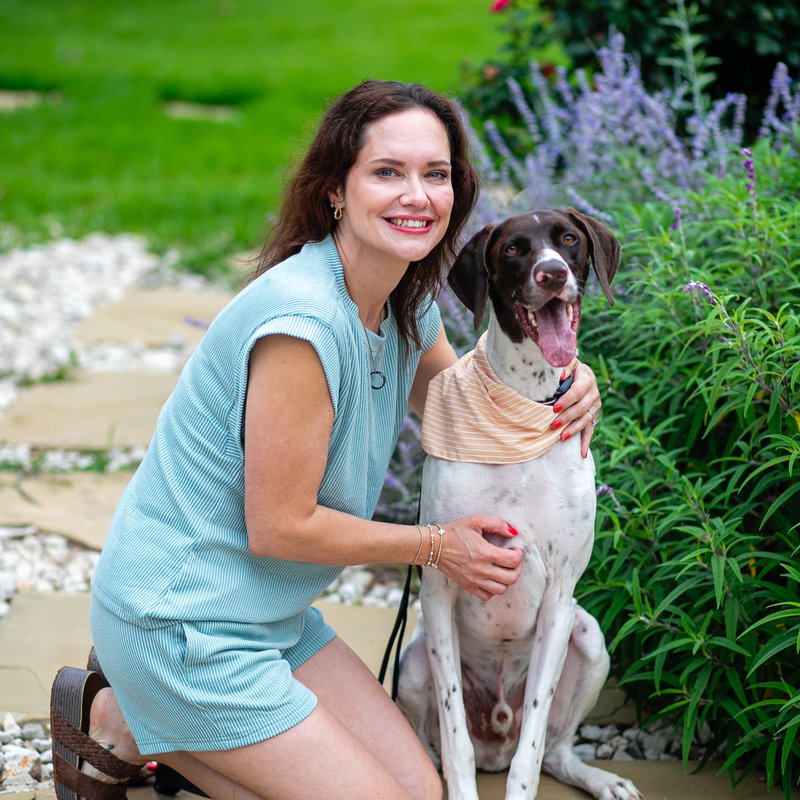
Diedre is a longtime resident of Hays County who finds true joy in giving back to her community. Alongside her is Rowdy Ray! Her always happy GSP with a big personality and an even bigger heart. When Rowdy isn't bringing smiles and comfort to those around him, you can find him splashing in the water or on the hunt for birds, squirrels and lizards. Together, they make a compassionate team dedicated to spreading kindness wherever they go.
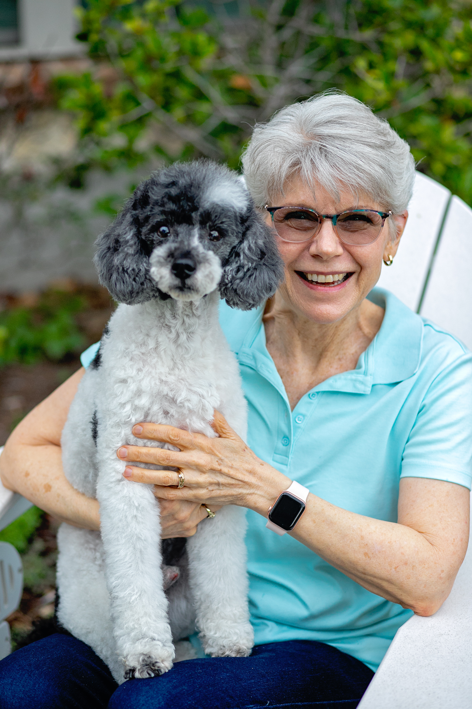
Nelson is an 8 yr old Miniature Poodle and has been sharing his sweet sassy brand of love in therapy situations since he was barely a year old. Saying that Nelson is “food motivated” is an understatement, and he will do pretty much anything for a treat! He loves to show off his tricks and to make you smile. I love seeing how Nelson's sweet and gentle personality can brighten someone's face and maybe make their day a little easier. Dogs really can accomplish what humans can't. We are thrilled to be joining the Canines Who Care team!
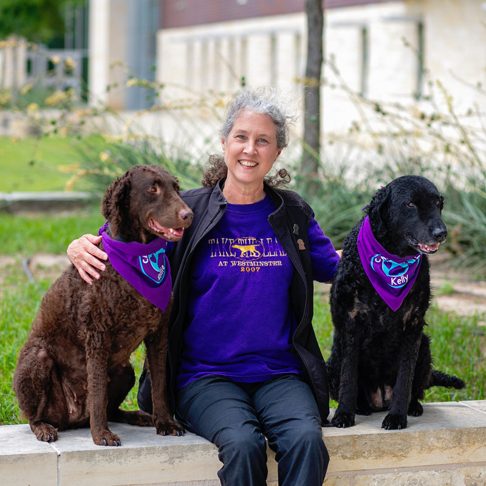
I have been involved in therapy dog work since the mid-1990s and currently volunteer with my two Curly-Coated Retrievers, Kelly and Nellie. Kelly, age 10, has been with me since birth and participates in a variety of sports, including conformation, obedience, rally, agility, and hunting. Nellie, age 6, lives with a special family in Colorado Springs and joins me for conformation and performance events. As a Canines Who Care Therapy Dog, Nellie enjoys visiting schools, hospitals, and assisted living communities. Together, Kelly and Nellie share comfort, companionship, and plenty of Curly-Coated Retriever love wherever they go.
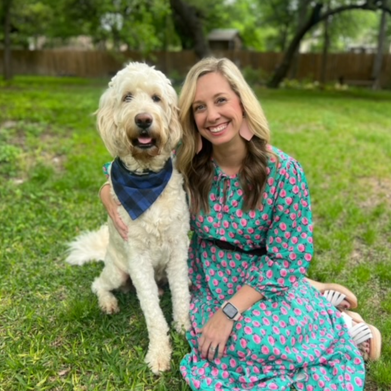
Hi! I’m Kristin Seibel and have been an educator for Hays CISD for over 18 years. Meet Hank, my goldendoodle. Hank is my friendly, large teddy bear who loves spending time with his human family. He also loves to shake, sit, and snuggle close to whoever is petting him. He rides around town with us and is adored by those around him for his giant size, gentle personality and fluffy coat.
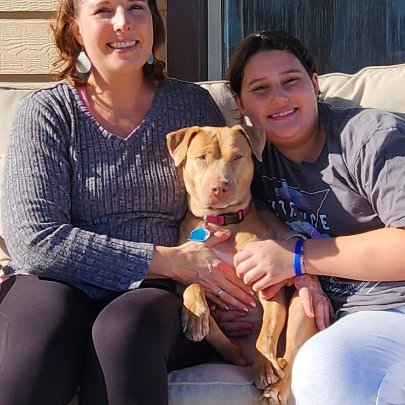
Melly is a Paws Animal Shelter Alumni formerly known as Princess, and joined our family on Halloween in 2022. She is the most chill dog we have ever had. She loves snuggling with her human sister Leila, sleeping, sunbathing, going for walks and runs with her human Mom, Ann, ice, peanut butter and watermelon. Her relaxed nature and calm personality make her great company for anyone needing a dog cuddle.
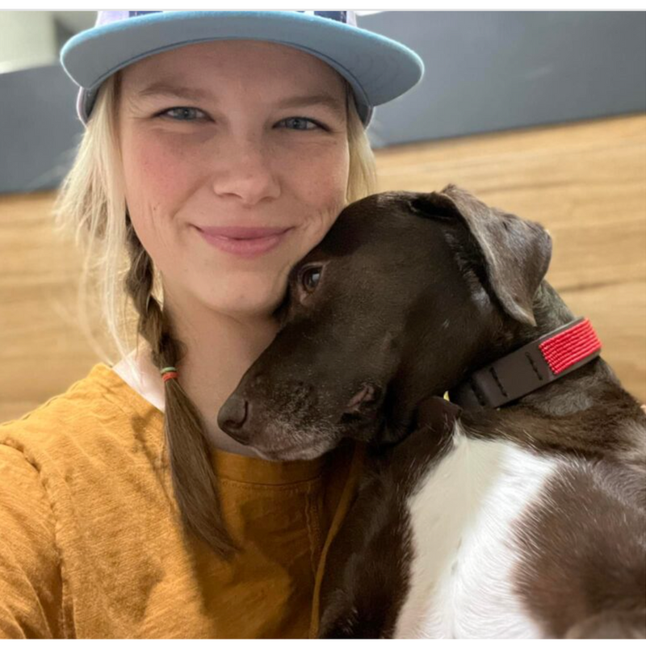
I first met Coco in 2019 while working at PAWS in Kyle. I instantly fell in love and adopted her in March and she’s been my heart dog ever since. She’s a 9 year old German Short Hair pointer mix with the most loving, gentle spirit. Coco has an incredible ability to sense people’s emotions, she always seems to know when someone needs comfort and is right there by their side. At home, she’s a total couch potato who loves cuddling, sunbathing, and soaking up attention from anyone she meets. Coco shares our home with three dog siblings and two cat siblings, but she’s happiest when she’s getting belly rubs and falling asleep while being pet.
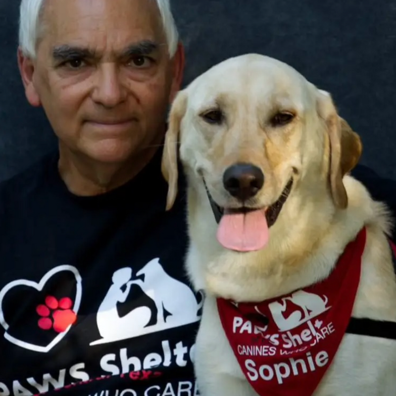
My name is Sophie and my favorite thing in the world is visiting with my friends, whether it be the daily walkers at the fence, a nurse at the hospital having a rough day, or a stressed student about to go into a test. These are my friends and I need to share some love to melt away their life’s daily stresses. And, I have a few tricks up my sleeve to get it done - literally. I love to dress up for the occasion, any occasion. Silly antics always bring a smile. Be my first contact of the day and I’ll show you my patented belly crawl greeting. Need a fist bump to celebrate an accomplishment. I’m there for you. Want to take me home with you? Ok, I have to draw the line somewhere. But, ask me for a trading card and sticker and you’ll have a keepsake to remember our visit the next time you could use a little puppy love.
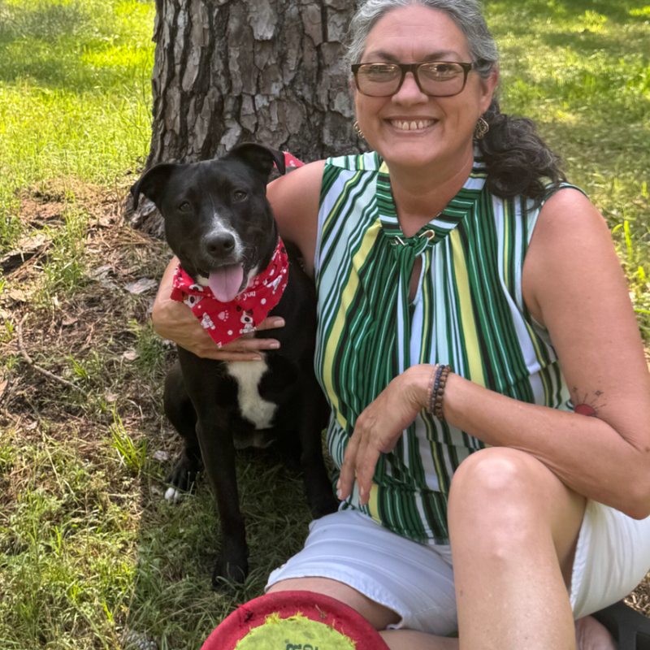
Hi everyone! My name is Sadie and this is my mom Sandra Lopez. We both LOVE to meet people and hardly ever met a stranger! I have always has loved meeting people. I love to lean into them if I feel they need a little hug and I do my best to share my good energy with them. Mom is always thanking me for helping her remember to be grateful for every moment, for every moment is an opportunity to share laughter, love, joy, dancing (yes I can do the cha cha) and play frisbee! #thatismyFAVORITEplaytime! Mom and I are super duper happy to be on this journey that allows us to meet more people and share the good news on how much a dog can improve your everyday life! We look forward to meeting you soon!
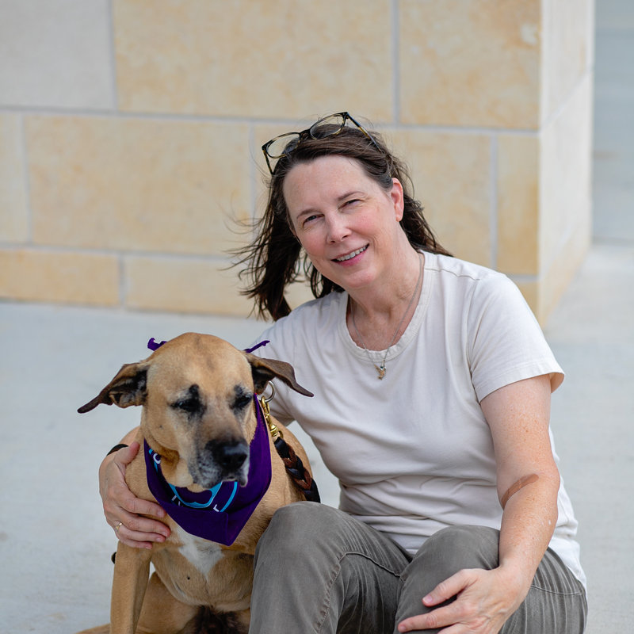
When Tucker joined our family I knew there was something extra-special about him. He fit right into our family, which includes three (human) boys and two blind cats. He has the sweetest, most easy- going disposition (his foster mom accurately described him as “chill”), making therapy dog work a natural path for him. Each visit is a joyful and fulfilling experience for both Tucker and myself. It’s amazing how many smiles appear when a dog walks into a room! Sharilynn & Tucker joined The Canines Who Care as a team in 2022.
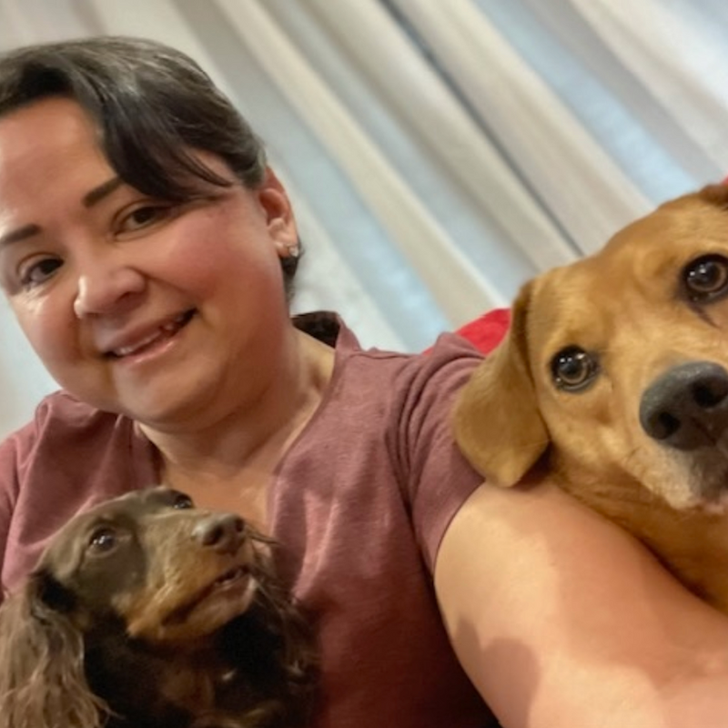
My name is Vanessa, my little canine is Molly, and my medium sized canine is Max, we are super excited to be joining Canines Who Care! We are looking forward to giving people an extra boost of support and a smile to last for days.
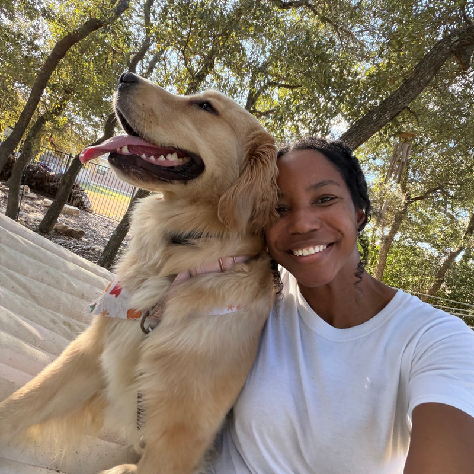
Hi! I’m Jennifer, and this is Shuri, my Golden Retriever therapy dog who lives right in the middle of our loud, busy, kid-filled home and loves every second of it. I’m a former local television news reporter and have lived in this community for over 12 years. Shuri and I are so excited to give back through therapy visits throughout Central Texas. Born in October 2024, Shuri is happiest when she’s meeting new people, collecting ear scratches, and spreading her golden retriever joy wherever she goes. She has earned her AKC Advanced Trick Dog title and loves swimming, learning new tricks, and trying activities like barn hunt and dock diving. We can’t wait to meet new friends and share a little comfort, encouragement, and golden glow along the way!
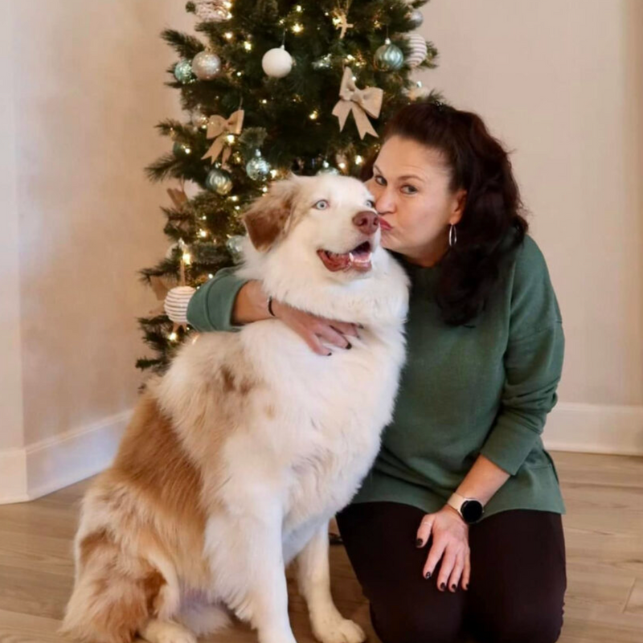
Hi! I’m Jackie and this is my four-year-old Australian Shepherd, Maverick. Maverick is an incredible therapy dog, bringing so much joy to everyone he meets. He enjoys visiting local schools, hospitals, and assisted living communities. Maverick and I look forward to our morning coffee runs and pup cups together. When he is not out meeting new friends, he loves to play fetch with his favorite bacon flavored ball in our backyard. Maverick and I are so excited to be part of the Canine’s Who Care community and look forward to meeting and visiting with you all very soon.
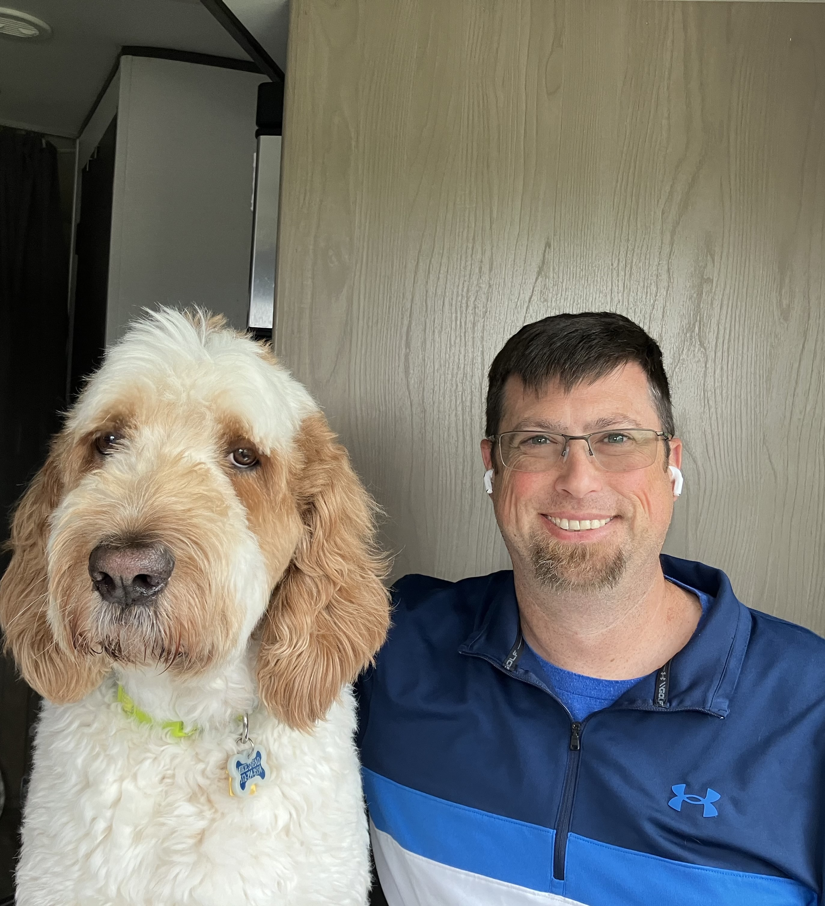
Astro is a big goldendoodle that is a goofy teddy bear that just wants you to pet and love on him. He is 5 years old and wants to be around his family as the center of attention. The goal is for him to be a regular at the schools in Hays CISD for teachers and students of all ages.
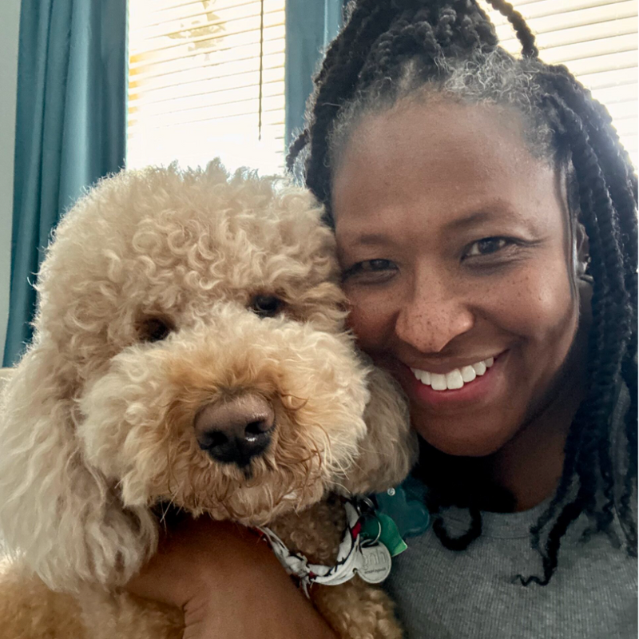
My name is Stacey Kelly and this is Graham. He is a F1B Goldendoodle and weighs 42lbs. He goes by several monikers: Mr. Graham Chops, Graahammy Lamby, Graham Cracker, and Graham Doodle just to name a few. Graham loves attention and will generously shower back in return. He is very good at reading your mood and will match the energy being given. He is a real charmer and has a magical way to make you smile.
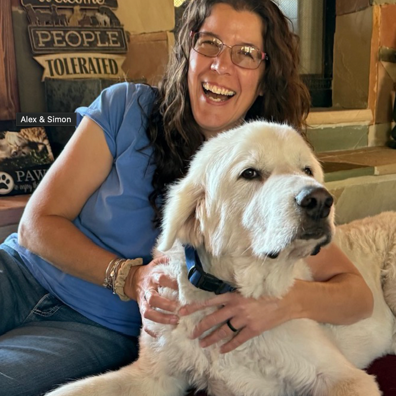
Alex and Cody are one of our newest teams. While he LOOKS like a polar bear, he's actually a Great Pyrenees / St. Bernard mix whose day job is working on a farm protecting chickens with his dad Wilbur.
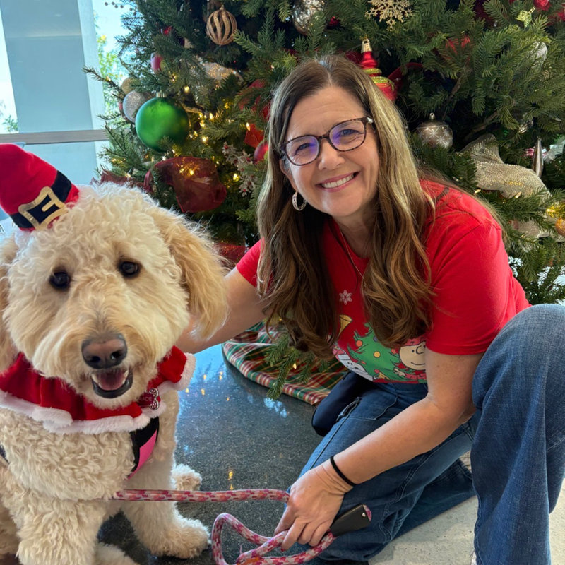
Hi! My name is Marie and this is my almost 2 year old golden doodle Gracie! Aka Gracie Lou or Lou Lou! Gracie loves to play ball, take walks, hang out with her miniature dachshund sister, Daisy, and get all the pets from everybody! She is super friendly! We are both excited to be a part of Canines Who Care! I am a teacher and Canines Who Care along with many other therapy dogs came to visit my school during a traumatic time. The dogs helped everyone feel better. I decided that I wanted to do the same thing! Help others to smile and relieve stress by sharing my precious Gracie. Cause who can resist her wiggly butt and her love for people! My hope is for Gracie to bring joy to those in need! All she wants is world peace! IYKYK! 🤣❤️
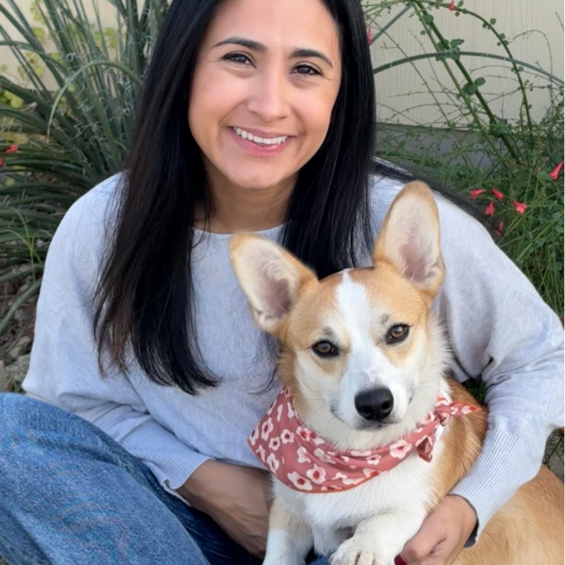
Hi there! I’m Renee and this is my 1 year old Pembroke Corgi, Zelda. Zelda loves to bring so much joy to others. She especially enjoys friendly greetings, belly rubs, and will always take a yummy treat! We are beyond excited in joining the Canine’s Who care Community and look forward to meeting with you soon!